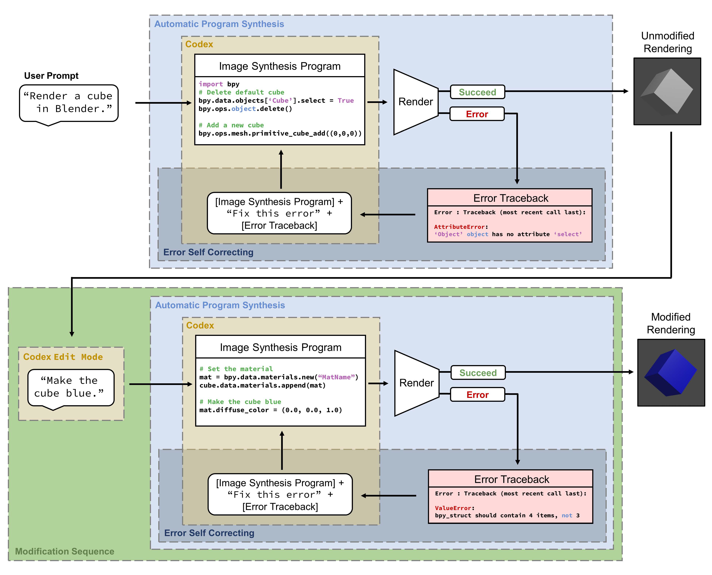

Text to Graphics by Program Synthesis with Error Correction
CVPR Generative Models for Computer Vision Workshop (GCV) — 2023
Top Finding: Program synthesis with error correction improves precision and enables reliable procedural rendering in text-to-graphics tasks.